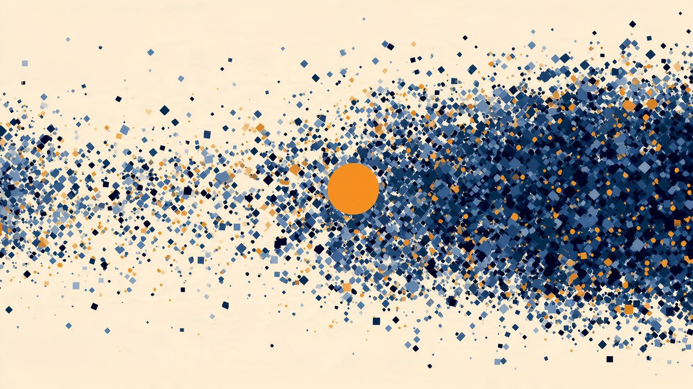
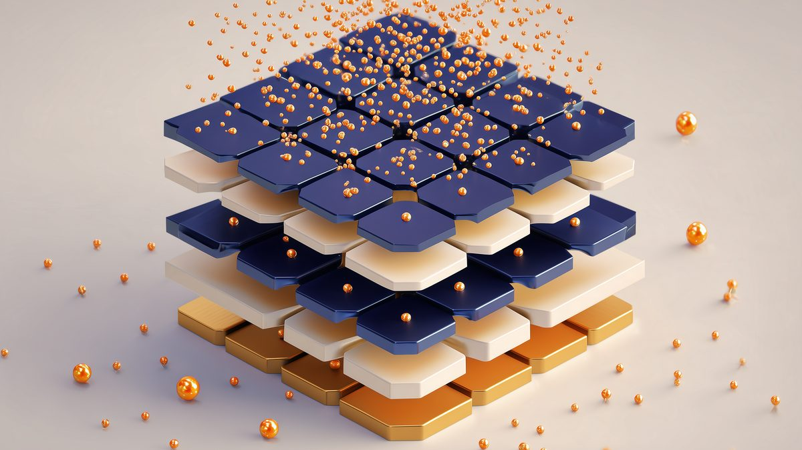
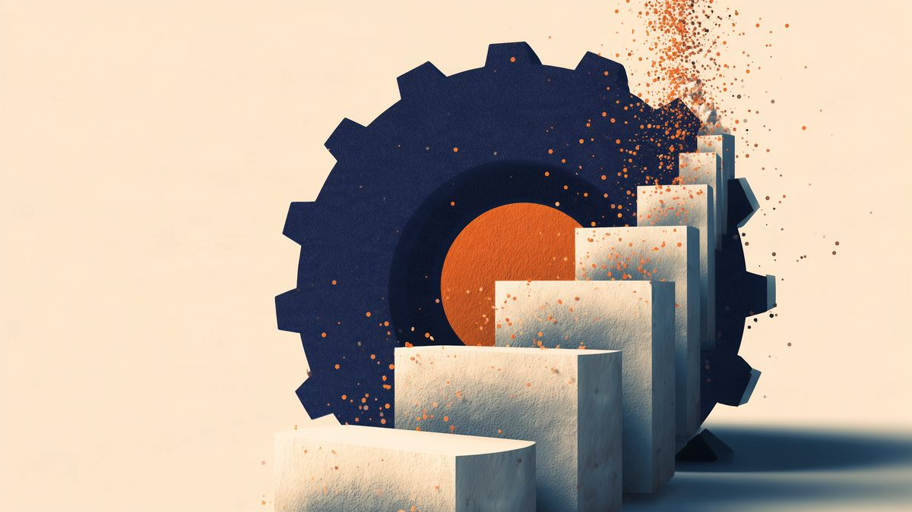
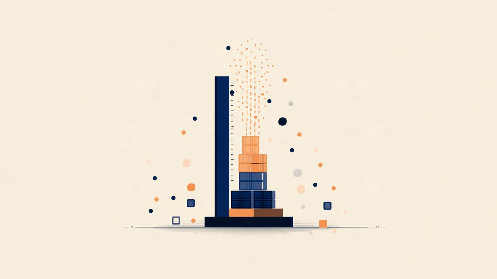
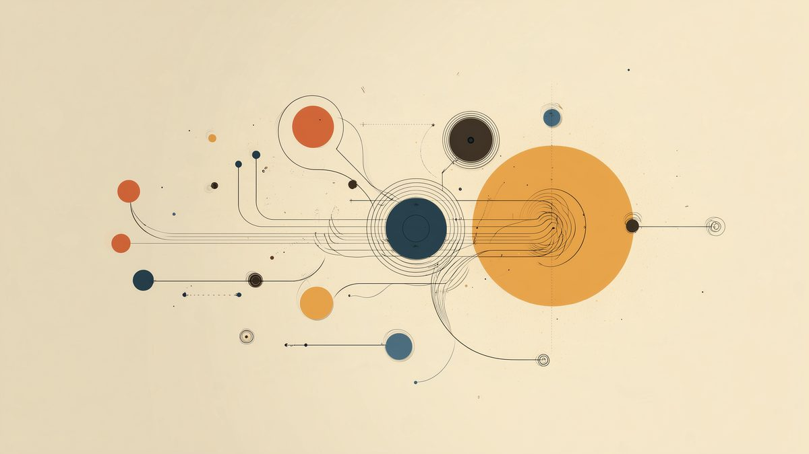
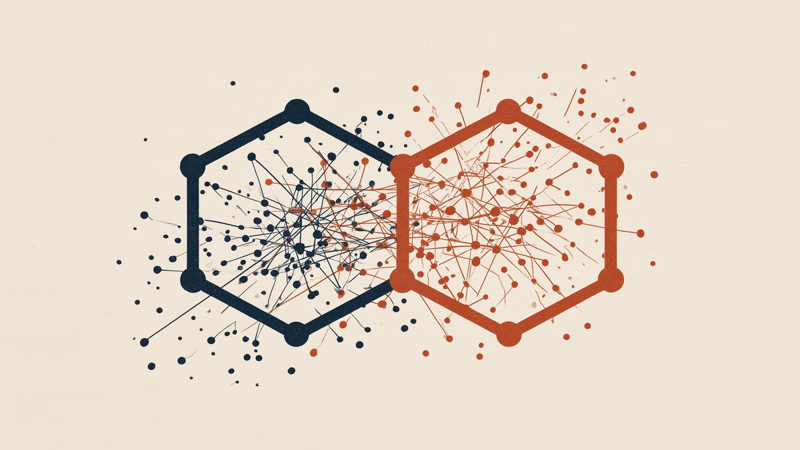
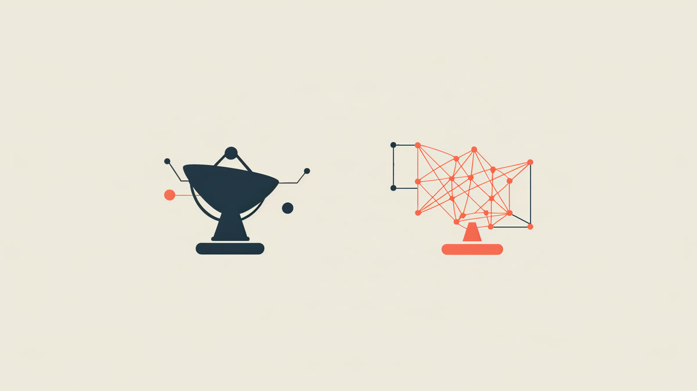

記事一覧
投資まわりの用語集
NISA・iDeCoなど投資の基礎用語と、暗号資産版シリーズで登場した専門用語をまとめました。記事を読んでいて出てきた言葉の意味を確認したいときに。

暗号資産の「価値」はどう読むか——5銘柄を並べて比較する
ビットコイン・イーサリアム・柴犬コイン(SHIB)・XRP・テザー(USDT)、シリーズ5本を同じ7つの観点で横並びに比較する早見ページです。
投資まわりの基礎知識クイズ
NISA・iDeCo・分散投資・複利など、投資の基礎知識を6問クイズで確かめられます。個別銘柄の診断ではなく、一般知識の理解度チェックです。結果はシェア画像として保存・投稿できます。

暗号資産の「価値」はどう読むか(5)
暗号資産版シリーズ第5弾。テザー(USDT)を例に、値上がりを前提としないステーブルコインの価値を7つの観点で読み解きます。発行の背景・ペッグの裏付け・準備資産・技術基盤・競合(USDC)・資金構造・リスク。

NISA・iDeCoは、始める前がいちばん大変だった
証券口座の多さに圧倒され、手続きが面倒で先延ばしにし、開設後も何を買うか迷った話。金額や商品名は伏せ、始めるまでの足踏みと、始めてからの実感だけを残す投資日記です。
投資まわりのニュースまとめ
NISA・iDeCoなどの制度変更、日銀の金融政策、市場全体の動きなど、一般知識の範囲のニュースを気づいた時に日付付きで追記していくまとめページです。
暗号資産の「価値」はどう読むか(4)
暗号資産版シリーズ第4弾。XRP(Ripple)を例に、発行体企業と資産の関係を7つの観点で読み解きます。発行の背景・価値の裏付け・供給設計・技術基盤・競合構造・資金保有構造・リスク(SEC訴訟の経緯)。
暗号資産の「価値」はどう読むか(3)
暗号資産版シリーズ第3弾。柴犬コイン(SHIB)を例に、初めてミームコインを7つの観点で読み解きます。発行の背景・価値の裏付け・供給設計・技術基盤・競合構造・資金保有構造・リスク。

暗号資産の「価値」はどう読むか(2)
暗号資産版シリーズ第2弾。イーサリアムを例に、発行の背景・価値の裏付け・供給設計・技術基盤と開発体制・競合構造・資金保有構造・リスクの7つの観点で読み解きます。

暗号資産の「価値」はどう読むか
暗号資産版シリーズ第1弾。ビットコインを例に、発行の背景・価値の裏付け・供給設計・技術基盤・競合構造・資金保有構造・リスクの7つの観点で読み解きます。

2021年、仮想通貨で学んだこと
2021年春、SNSの盛り上がりに乗って複数のアルトコインを買い始め、5月の急落相場でも手を止められなかった話。金額は伏せ、比率と反省だけを残す記録です。

企業の「成長段階」はどう読むか(13)
米国株シリーズ6本目・最終回。BE Semiconductor Industries(BESI)を例に、「装置を作る会社」という視点から受注高の先行指標性と技術採用時期リスクを整理します。

企業の「成長段階」はどう読むか——米国株6社を並べて比較する
Ambiq Micro・MaxLinear・Astera Labs・Tower Semiconductor・Credo Technology・BE Semiconductor Industries。米国株シリーズ6本の比較を1つの表にまとめ直した早見ページです。

企業の「成長段階」はどう読むか(12)
米国株シリーズ5本目。Credo Technology(NASDAQ: CRDO)を例に、好決算にもかかわらず株価が急落した理由をGAAP粗利益率の低下・顧客集中の観点から整理します。

企業の「成長段階」はどう読むか(11)
米国株シリーズ4本目。Tower Semiconductor(NASDAQ: TSEM)を例に、これまでの「設計する会社」とは逆の「作る会社(受託製造)」の視点から成長段階を整理します。

企業の「成長段階」はどう読むか(10)
米国株シリーズ3本目。Astera Labs(NASDAQ: ALAB)を例に、売上急拡大・黒字という「良い数字」の裏側にある、少数の大口顧客への依存度を整理します。

企業の「成長段階」はどう読むか(9)
米国株シリーズ2本目。MaxLinear(NASDAQ: MXL)を例に、成熟企業が既存事業からAIデータセンター向け光接続事業へ転換する途中で見えてくる数字の読み方を整理します。

企業の「成長段階」はどう読むか(8)
米国株シリーズ1本目。Ambiq Micro(NYSE: AMBQ)を例に、売上+89.7%という伸び率と、まだ営業赤字という収益基盤の距離をどう読むかを整理します。

企業の「成長段階」はどう読むか——7社を並べて比較する
ニッポン高度紙工業・グロービング・さくらインターネット・サンワテクノス・テクノフレックス・大阪有機化学工業・ウシオ電機。日本株シリーズ7本の比較を1つの表にまとめ直した早見ページです。

企業の「成長段階」はどう読むか(7)
ウシオ電機(6925)を例に、「売上+27.7%・営業利益+410.5%」というV字回復の中身を、低い比較対象・M&A効果・本業改善の3つに分解して読む。シリーズ7本目・日本株編最終回です。

企業の「成長段階」はどう読むか(6)
大阪有機化学工業(4187)を例に、「営業利益は増益、純利益は減益」という一見矛盾した予想を7つの観点で読む。シリーズ6本目です。

企業の「成長段階」はどう読むか(5)
テクノフレックス(3449)を例に、「全社は増収増益」という見出しの裏にある事業別の明暗を7つの観点で読む。シリーズ5本目です。

企業の「成長段階」はどう読むか(4)
サンワテクノス(8137)を例に、「商社は成長株に見えない」という先入観を7つの観点で掘り崩す。前3回との対比シリーズ4本目です。

企業の「成長段階」はどう読むか(3)
さくらインターネット(3778)を例に、営業赤字を出しながら大規模先行投資を行う「投資回収前段階」の会社の成長段階を7つの観点で整理。前2回との対比シリーズ3本目です。

企業の「成長段階」はどう読むか(2)
グロービング(277A)を例に、事業モデルが変わりつつある会社の成長段階を7つの観点で整理。前回(素材メーカー)との対比シリーズ2本目です。

企業の「成長段階」はどう読むか
ニッポン高度紙工業(3891)を例に、成長段階を読む7つの観点を整理。個別銘柄の売買を推奨するものではなく、分析視点を学ぶケーススタディです。

いま、私の資産はどこにあるのか
米国株30%・投資信託30%・日本株20%・仮想通貨10%・現金10%。金額は伏せ、比率だけを残す最初の定点記録です。

証券口座はどう選ぶか
主要ネット証券5社を手数料・商品・ポイントの軸で比較。特定の1社を断定的に推さず、目的別の選び方を整理しました。

新NISAとiDeCo、どこが違うのか
非課税限度額・流動性・所得控除の違いを整理。「いつ使えるお金か」という軸で、目的別の考え方をまとめました。

不動産投資をはじめる前に、静かに整理しておきたい基礎知識
現物不動産・REIT・不動産クラウドファンディングの違い、利回りの見方、特有のリスク、基礎用語をまとめました。